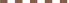

Notice de la carte
Informations génerales
Cette carte a été inspiré des cartes des associations APiCy, AVB et La Ville à Vélo. Consultez la notice de cette dernière carte pour plus d'information.Comment signaler une erreur, faire une proposition, etc.?
Si vous constatez une erreur ou des éléments manquants sur la carte, vous pouvez envoyer un mail par le lien "contact" sur la gauche de la page ou bien utiliser l'outil OpenStreetBugs. Vous pouvez aussi corriger et saisir vous-même par l'intermediaire du site OpenStreetMap (onglet "modifier") ou avec un éditeur OSM tel que JOSM.Naviguer dans la Carte
- Zoom avant
- Vous pouvez zoomer avec la molette de votre souris, en cliquant sur les icônes '+' et '-' dans le coin en haut à gauche ou en déplaçant la barrette glissante entre ces deux icônes.
- Zoom arrière
- Cliquez l'icône '-' dans le coin en haut à gauche ou utilisez la molette de votre souris.
- Déplacer a carte
- Faites simplement glisser la carte avec la souris en appuyant sur le bouton gauche.
- Zoom dans la zone détaillée
- Au centre de la carte, entouré d'un cadre rouge, se trouve une zone qui dispose de niveaux de zooms plus détaillées que le reste de la carte. Positionnez le curseur à l'intérieur du cadre pour accéder aux niveaux détaillés.
- Créer des liens vers la cartes
- Vous pouvez créer un lien à partir de la carte actuellement affichée en cliquant sur Permalien dans le coin en bas à droite. Ceci aura pour effet de rafraîchir l'adresse URL dans la barre d'adresse de votre navigateur internet, laquelle pourra ensuite être copiée dans vos emails ou commentaires de forums/blog, etc.
Couches supplémentaires
L'onglet  en haut à droite de la
carte permet de superposer la carte avec des couches
supplémentaires.
en haut à droite de la
carte permet de superposer la carte avec des couches
supplémentaires.
Couche "Petites routes et chemins"
Cette couche met en valeur des petites routes et chemins qui se prêtent particulièrement pour une utilisation avec le vélo.
Petite route de campagne

Chemin rural, agricole ou forestier, avec un
revêtement dur de type asphalte ou
composée de matériaux
très compactés.

Chemin rural, agricole ou forestier, avec une surface
en gravier ou en terre/sable compact.
Informations techniques
Ces informations s'adressent à des personnes qui maîtrisent les outils osmosis, PostGis, Tilemill et Openlayers. Les fichiers de configuration et de style utilisés sont libre de tout droit et peuvent être reprises et modifiées. La seule chose que je demande, c'est de m'informer de tout projet qui reprend une partie du mien, qui s'en inspire ou qui après l'avoir regardé prend une voie différente. J'apprécie aussi tout commentaire critique.
- Avis
- Initialement, ce projet n'était pas destiné à être publié et les fichiers ne sont donc pas très bien structurés et documentés. Ils ne répondent en aucun cas à mes propres exigences en matière de génie logiciel.
La carte a été réalisée avec la chaîne d'outils suivante:
- Import des données OSM dans une base de données PostGIS avec osm2pgsql:
osm2pgsql -c -m -s -d osm -U <user> -W -H localhost <osmfile> -S osm2pgsql.style
<osmfile> est le fichier au format OSM (.osm, .osm.bz2 ou .pbf) qui contient les données OSM de la zone à couvrir. Il peut être créé avec osmosis à partir d'un extrait geofabrik. On peut aussi utiliser un extrait "région" ou "pays" et utiliser osm2pgsql avec l'option --bbox pour extraire une zone géographique. - Traitement de la base de données pour faciliter l'exploitation avec Tilemill/Mapnik:
psql -d osm -f postproc.sql
Actuellement ce traitement consomme beaucoup de temps, plus que le processus de rendu lui-même. - Si la zone à couvrir comprend la ligne côtiere: création d'un fichier shp pour la ligne côtiere,
qui sera utilisé pour la couche "land" dans Tilemill:
- Télécharger le fichier shape du site de Jochen Topf: land-polygons-split-4326.zip
- Ouvrir ce fichier dans QGis:
- "Couche / Ajouter une couche vecteur"
- Sélectionner les polygones qui couvrent la zone de la future carte.
- Sauvgarder avec "Couche / save selection as vector file" dans layers/land/coast.shp dans le répertoire projet de Tilemill
- Géneration de la carte avec Tilemill:
- Un projet pour la couche de base "Carte Velo Base" et un projet pour la couche overlay "Carte Velo Chemins"
- Pour la génération des tuiles à déployer, on peut lancer Tilemill en mode "batch":
tilemill export --format=mbtiles --files=<répertoire tilemill> --metatile=8 CarteVeloBase CarteVeloBase.mbtiles
Pour éviter des artefacts aux limites entre deux tuiles, tel que des libellés tronqués, et une répétition des noms de rue non-conforme avec le paramètre text-spacing, il faut choisir une valeur metatile de >= 8 et une buffer-size de 768 ou plus dans le style "Map";
- Publication sur le site avec OpenLayers. On peut utiliser directement le fichier .mbtiles avec un layer du type TMS ou bien les tuiles extraites du fichier .mbtiles à l'aide de l'outil mb-util avec un layer OSM. Comme les fichiers .mbtiles sont plus compactes que les tuiles extraites, j'ai opté pour la première solution.
- osm2pgsql.style: Fichier style pour l'import des données OSM avec osm2pgsql.style
- postproc.sql: postproc.sql: fichier de commande sql pour le post-traitement de la base de données PostGis
- CarteVeloBase/*: Fichiers projet et style pour la carte de base. À copier dans le répertoire "project' de Tilemill
- CarteVeloChemins/*": Fichiers projet et style pour le calque "petites routes et chemins". À copier dans le répertoire "project' de Tilemill